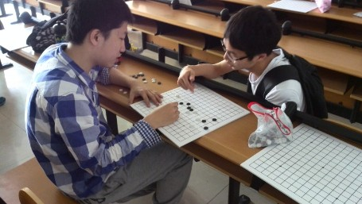
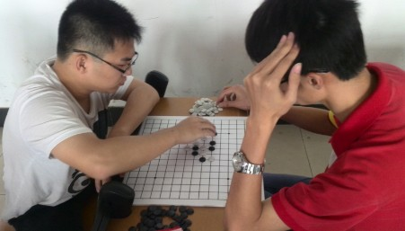
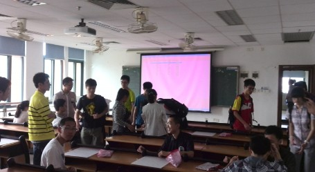

第五届广东高校联赛预赛第一场今日开战
#1 第五届广东高校联赛预赛第一场今日开战 作者：无尽 发表时间：2014-4-12 22:10:07
第五届广东高校联赛预赛第一场今天开战，大学城赛区（8所高校）进行了5轮角逐，RIF规则，3人组成一支队伍，个人赛计算团体积分，个人冠亚军分别由中山大学盘先桐和广东工业大
学任冠豪获得，而最终中山大学1队以1分之微力压广东工业大学1队获得冠军，中大、广工分别是上届高校赛五子棋团体亚军及第4名，今年都将有希望冲击冠军。本赛区承办学校华南理工大学可直接
获得晋级决赛的资格。
花都赛区也在今天举行，明天天河赛区（18所高校）开战，上届广东高校联赛四棋各项团体冠军都出自这一赛区，战况将更加激烈。其余从化、东莞、珠海赛区预赛将于下周举行。



感谢中山大学岳杰同学提供比赛照片和信息。
［此帖子已被 无尽 在 2014-5-13 20:09:19 编辑过］
#2 Re:第五届广东高校联赛预赛第一场今日开战 作者：尕孩 发表时间：2014-4-14 13:24:23
第一張照片。。目測素帥鍋。。